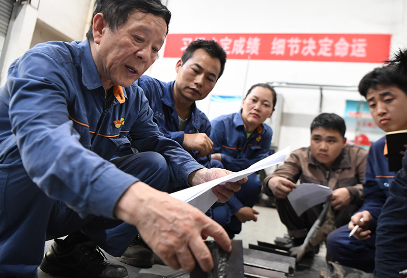
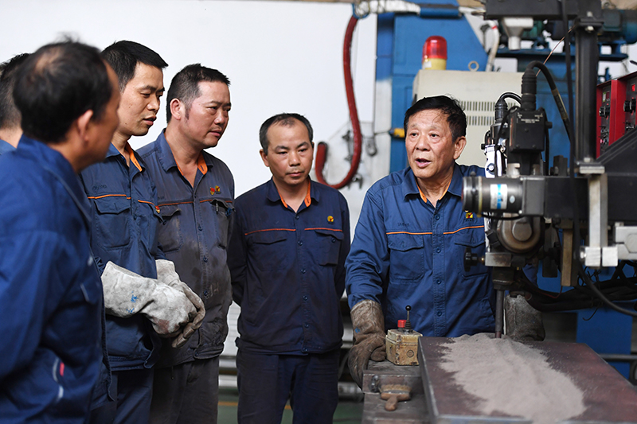

新华社北京9月27日电 题：精益求精 勇于创新——工匠精神述评
新华社记者 张辛欣
劳动者的素质对一个国家、一个民族发展至关重要。不论是传统制造业还是新兴产业，工业经济还是数字经济，工匠始终是产业发展的重要力量，工匠精神始终是创新创业的重要精神源泉。
时代发展，需要大国工匠；迈向新征程，需要大力弘扬工匠精神。
“执着专注、精益求精、一丝不苟、追求卓越。”2020年11月24日，在全国劳动模范和先进工作者表彰大会上，习近平总书记高度概括了工匠精神的深刻内涵，强调劳模精神、劳动精神、工匠精神是以爱国主义为核心的民族精神和以改革创新为核心的时代精神的生动体现，是鼓舞全党全国各族人民风雨无阻、勇敢前进的强大精神动力。
精益求精，擎起“中国制造”
一把焊枪，能在眼镜架上“引线绣花”，能在紫铜锅炉里“修补缝纫”，也能给大型装备“把脉问诊”……在“七一勋章”获得者、湖南华菱湘潭钢铁有限公司焊接顾问艾爱国的眼里，不管什么材质的焊接件，多么复杂的工艺，基本没有拿不下的活儿。

6月17日，艾爱国（左一）在湖南湘潭湘钢高级技工学校焊接实习基地检查学生的焊接作业。新华社记者 薛宇舸 摄
在所有焊接中，大型铜构件难度最大。因为需要在超过700摄氏度高温下，在几分钟的时间窗口内，精准找到点位连续施焊，稍不留神就前功尽弃。“焊的时候皮肤绷紧，手不自觉地颤抖，不知道能坚持到第几秒。”面对技术、意志力的多重考验，艾爱国将旁人望而却步的事情变成了自己的绝活。
工匠以工艺专长造物，在专业的不断精进与突破中演绎着“能人所不能”的精湛技艺，凭借的是精益求精的追求。
